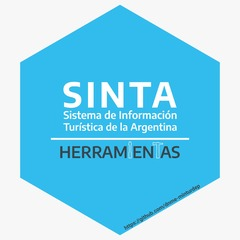

Function reference
-
remover_tildes() - Limpieza general de tildes:
-
numeros_en_palabras() - Limpieza de digitos en texto:
-
limpiar_texto() - Limpieza general de texto:
-
`%out%` - Negación de %in% :
-
etiquetar_provincia() - Etiquetado de variable provincias:
-
archivo_plano_srv() - Leer archivos planos del server:
-
ls_srv() - Listar carpetas y archivos del server:
-
read_file_srv() - Leer archivos del server:
-
read_rds_srv() - Leer archivos rds del server:
-
read_sav_srv() - Leer archivos sav del server:
-
set_user_srv() - Configurar usuario del server de dnmye:
-
view_tree_srv() - Diagrama de carpetas y archivos del server:
-
write_file_srv() - Leer archivos rds del server:
-
tasa_variacion() - Tasa de variación: